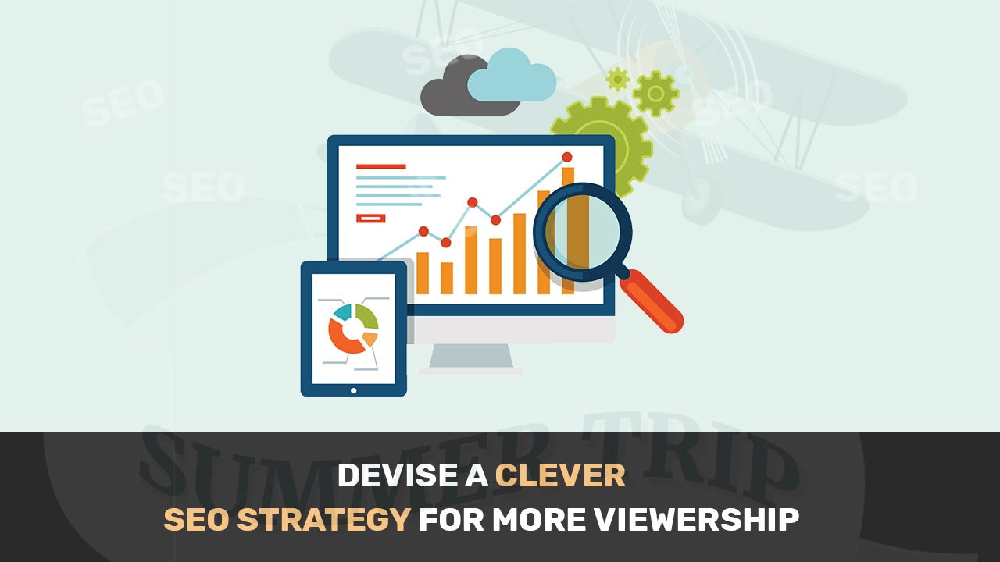
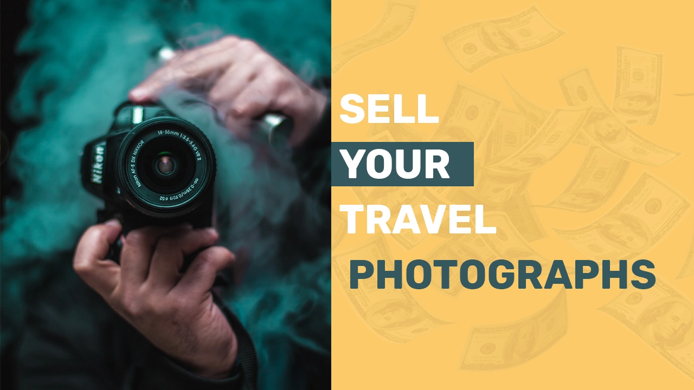

Today I am going to uncover all the hidden secrets which all levels of travel vloggers (Youtubers) can utilize to earn a handsome amount of money through your travel Youtube channel(s).
Let’s jump in to this most comprehensive guide for travel youtubers that how they can leverage Youtube and earn millions.
How much money do travel Youtubers make (earn)?
Top travel influencers can earn up to $1Million yearly Let’s explore how you can achieve the same
As YouTube became more and more prominent, so is the consumption of video content. And you should feel proud that because of you, people get to know about travelling places way in advance before going to that place in actual.
As per many studies, majority of the contents which are consumed worldwide are travel vlogs because of the everlasting love of people towards travelling and exploring new places.
Your followers / subscribers love you as you as the travel vloggers are always on the road documenting and filming their adventures, acquaintances and experiences. Majority of the travel Youtubers make travelling a thrilling experience for us all, a two-way process of fun: it is fun for them to deliver the same experience which they are experiencing through their travel vlogs. Audience like watching and learning about the travelling experiences and feel the similar pleasure of being in that place.
So, excited, let’s dive in that how travelling wanderers and vloggers/ YouTubers like ‘Vagabrothers’ from California (million subscribers and 72 million views) and ‘Fun for Louis’ (2 million subscribers and 316 million views) are making awesome money.
Believe me, that these top travel vloggers in the world not only relish in the joys and adventures of travelling however also they are making a living out of it. These Youtubers are in fact paid to travel and are asked to share their experience.
Here are the most advanced ways in which you as a travel and tour vlogger can make money as well a living in 2021
Monetize your travel videos

The best and most important step towards making money from your travel vlogs is to monetize your channel through Google AdSense. This is the basic need of a Youtuber to earn money.
Google AdSense is a pretty simple program by Google that allows Youtubers with at least 4000 watch hours and 1000 subscribers in a year to run ads on their travel and tour videos and get paid when the viewer clicks the ad.
Once your channel gets monetized through Google AdSense, Google runs ads on your channel that are relevant to the audience watching them. These video ads appear in the beginning, middle or end of the video ( concepts of true view in display and in stream ads).
Apart from the Ads relevant to the audience which interests them ( for e.g. MBA Ads for management students, Software ads for marketing guys etc ) travel and tour Ads appear in Youtuber’s videos which increases the chances of clicking on ads as they are already interested in travelling and ultimately increasing the chances of clicks.
According to Google revenue share policy, you as a Youtuber (Travel / Tour Vloggers included) receive 68% of whatever the advertisers are paying to Google to run their ads. Not having to actually sell the ads or managing ad inventories makes Google AdSense the most preferred platform from Google for travel vloggers to monetize their channel.
Devise a clever SEO strategy for more viewership

Having a killer SEO strategy makes all the difference in the world. To have your travel videos ranking among the top travel videos you have to sweat a little.
If you want to make the most money possible as a travel vlogger, first and foremost thing is to learn and understand your audience. Deliver what they want to watch by behavior analysis.
Take your time and do in depth research of the keywords according to your buyer persona as that is and will remain your sole focus. Keywords which your target audience are searching are in a sense the real MVPs.
Make sure that you use these keywords in your travel video titles, tags as well as in your video descriptions.
Since the best travel vlogs are the ones that tell a story, make sure your travel vlogs have a story, your audience can connect to it easily.
Creating video subtitles and closed captions are a time consuming however are very rewarding, as they will help your viewers better in understanding your content and make your travel videos rank among the top travel videos as well.
Another important aspect that will make a viewer click on your travel video is the thumbnail. Like a picture, a thumbnail is also worth a thousand words. Design a thumbnail that grabs the attention of your viewer in the first go. They should excite people about an opportunity / or your defining and decisive pose / or an inspiring call to action to make people click.
Note:- Don’t use click bait as a tactic to improve click through rate.
Also, embed Youtube video cards (links) to your other travel videos in the end of your travel videos, so that viewers are connected to spend more time on your channel and become enticed to spend more watch hours on your travel channel.
Gain new subscribers by encouraging viewers to subscribe
Whenever you make a travel video, make sure you address your audience and then encourage them to subscribe to your travel YouTube at the beginning and end of your travel video. When the subscribers on your travel channel increase, the overall watch time and engagement also increases, resulting in more ad clicks and more sales. Moreover, when your subscribers increase organically, the YouTube algorithm boosts your discoverability, resulting in, more traffic, more ad clicks and more money.
Paid campaigns for Brands as an Influencer

When you earn a spot amongst the most amazing and talked about travel vloggers with a dedicated audience, paid campaigns are not far away.
Many companies pay you to use their products (for example- advertising an energy drink or a travel gear on a mountain hike) in return for an all-expenses paid trip and make videos using their products. Hence, this way you are advertising their products to the right audience which is similar to their audience, therefore in return they get immense brand advocacy, brand awareness, leads and sales. However, in these kinds of product partnership, you have to agree to certain deliverables that varies from brand to brand.
It has been observed that clothing brands pay travel vloggers to wear their clothes and use them in their travel vlogs in exchange for returns in cash and kind.
Many resorts and restaurants pay travel vloggers to come and stay at their facility during their trip and share honest reviews about their staff and services in their tour videos in that way, restaurants / hotels get enough awareness and moreover positive reviews.
You will also be approached by many companies which want to utilize your audience in their marketing efforts as a compelling channel.
This forms another super way in which a travel vlogger/ youtuber makes money.
Build your own brand: create and sell your own products

Utilize the power of you as a “BRAND”
A lot of work goes into turning your travel vlog channel into an ecommerce platform with an influenced audience that can buy, and this way you can get a bucket full of benefits out of it.
By creating and launching your own line of products, you can design personalized merchandize like T-shirts, caps, key rings, pens, tour packages, guides etc.
You can even publish and sell self-penned tour books, travel guide books, books on the culinary diversity of a place or even launch a travel course for your audience.
It all depends on how you can position yourself and utilize your own creativity and give the ultimate knowledge to your viewer base to be well connected with them. Provide them with some lucrative schemes on your merchandise and products so that they are compelled to buy them. May be segmenting on the basis of places etc.
Making money as travel youtuber/ vlogger through this tip majorly depends on your own caliber and the loyalty of your audience.
Complementing your travel blog with the travel vlog

While travelling is a broad concept and not every experience can be shared in a travel vlog but you can always launch a travel blog along with your tour and travel channel as some people like to read the experience rather than just watch. This will truly act like a bonus for your audience who wants to know about your travel.
A travel blog is also a great way to make decent money once you monetize your travel blog through Google AdSense. All you have to do is sign up for Google AdSense and rest is provided and done by Google itself. You can embed your Youtube channel’s videos into your blog that will drive traffic to your channel and ultimately more views and ad clicks. You can also use this travel blog as a resume to score freelance travel writing projects.
Sell your travel photographs

Heard of Sandeep Maheshwari? Though, he is a motivational speaker, however sells photos through his venture – images bazaar website and earns a lot.
As travel vlogging and its photography go hand in hand, every destination has its own story waiting to be captured in its rawness. You can do freelance travel photography and sell the license of your photographs for commercial use.
As a travel photographer you should show class apart quality who captures the soul of a destination. Many media outlets, magazines, tour companies, newspapers, broadcasting channels spend great amount of money for purchasing the fresh and compelling images.
Once you manage to catch the eye of these buyers with your skill and imagination, you start receiving regular requests from them to license your travel photography.
You can also pitch them a project on your own after you accomplish yourself as a skilled photographer.
Collaborations with fellow travel vloggers to get more viewership

Another way of increasing your income flow is through collaborating with other travel vloggers i.e. you can release a series of travel vlogs with a fellow travel vlogger.
By doing so you attract their audience as well towards your travel channel earning you more subscribers, views, watch hours, ad clicks and ultimately more money. Many travel Youtubers also buy Youtube subscribers that are active, real, organic, legit, targeted to increase their subscribers base / grow their Youtube channel and earn more money.
Travel vlogs have become the new picture postcard: the dedicated audience always eagerly waits for the next one. It has become the definition of the perfect combination of work and fun. Giving people first hand experience of a destination while keeping your travel vlogs professional but raw is the key to making great travel vlogs and how you can make money as a travel vlogger.
With the help of these smart tips start your travel vlog channel today and embark on the accompanying adventures while making decent figures out of it!
Hope you this article gave you awesome tips to become an informed travel vlogger (Youtuber) to make money in 2020. Feel free to share!